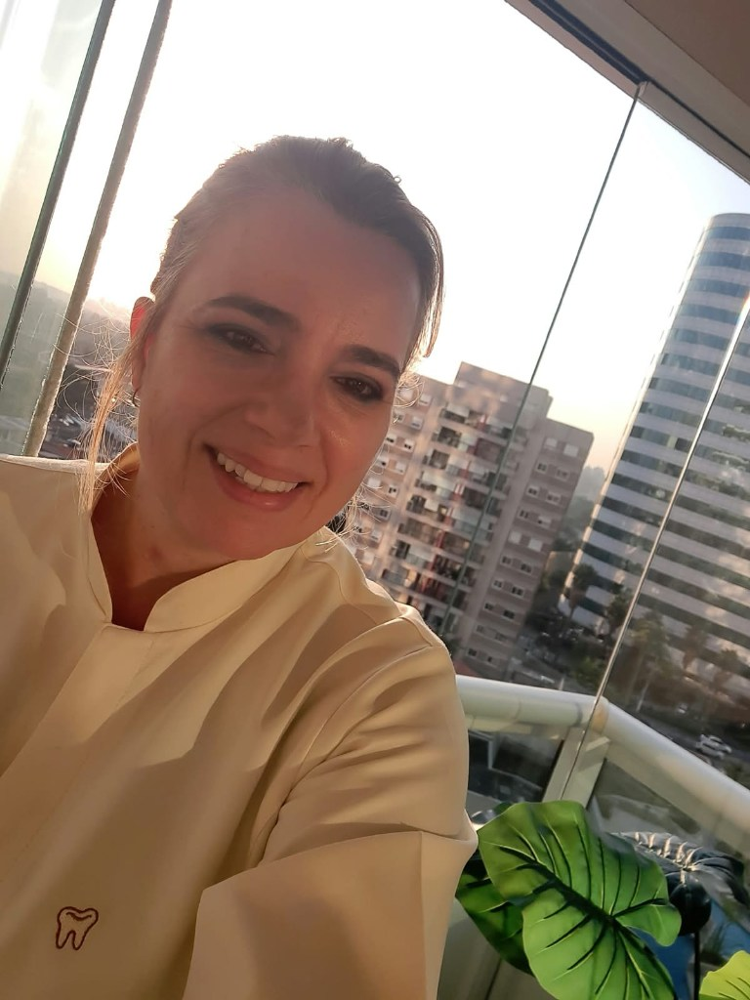

Muito prazer,
eu sou a Dra. Carmen Silvia.
Formada há 30 anos, sou mãe de dois filhos e escolhi a odontologia ainda na infância.
Desde a minha infância e adolescência, como paciente, eu admirava o trabalho dos dentistas. Pude entender que cuidar de um sorriso transforma a vida de uma pessoa.
Ao longo da minha trajetória clínica, construí um atendimento que começa pela escuta ativa. Acredito que cuidar do sorriso de forma saudável vai muito além de um procedimento pontual. Envolve compreender e respeitar o contexto de cada paciente, sua expectativa e a de seus familiares, em cada fase da vida.
Conduzo meus atendimentos com paciência e transparência, para que o paciente entenda o que está acontecendo, quais são as opções e o que esperar de cada etapa do tratamento.
Prezo por me manter sempre atualizada, buscando aperfeiçoamento profissional e participando de cursos e congressos, para oferecer um cuidado seguro, atual e humano.
Será um prazer cuidar do seu sorriso e do sorriso da sua família.
Acolhimento real,
de perto.
Registros da Dra. Carmen Silvia no consultório da Cuidar e Sorrir Odontologia, no Ed. Thera Office Faria Lima.


Carinho e confiança
reconhecidos.
Depoimentos e avaliações recebidas no Google sobre a experiência de acolhimento e cuidado no consultório em Pinheiros.
"Excelente profissional! A Dra. Carmen tem uma paciência e um carinho incríveis, especialmente com crianças. O consultório é super acolhedor e transmite muita tranquilidade."
"Atendimento humanizado de verdade. A Dra. Carmen ouve com atenção, explica cada etapa com muita clareza e nos transmite total segurança."
"Espaço impecável no Edifício Thera Office, com atendimento pontual e hora marcada. Uma dedicação rara que faz toda a diferença para a família toda."
Saúde bucal conectada
à vida inteira.
Uma abordagem que une prevenção, acompanhamento do desenvolvimento e reabilitação com respeito à individualidade de cada paciente.
Desenvolvimento com acolhimento
Atenção desde os primeiros dentes até a adolescência, orientando a família sobre higiene, hábitos bucais e crescimento equilibrado dos maxilares.
Visão além do sorriso
Olhar atento para os sinais que a face e a respiração apresentam, acompanhando sua relação com a posição da língua e dos lábios, o sono, o desenvolvimento dos maxilares e a qualidade de vida.
Prevenção e longevidade
Planejamento personalizado em clínica geral, estética e reabilitação oral, priorizando função mastigatória, conforto e saúde a longo prazo.
Tempo para ouvir.
Clareza para decidir.
Um atendimento individual começa por entender o que trouxe você à consulta.
Sua história importa
Um espaço para conversar sobre suas expectativas, hábitos e dúvidas.
Entender cada etapa
Converse sobre as possibilidades de cuidado e esclareça suas dúvidas sobre o plano proposto.
Cuidado no dia a dia
Prevenção e acompanhamento fazem parte da atenção à saúde bucal em diferentes fases da vida.